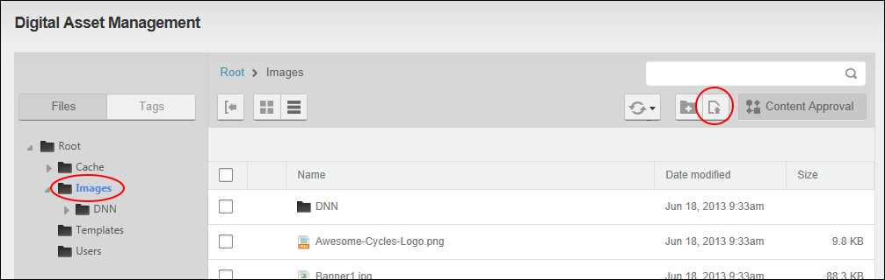
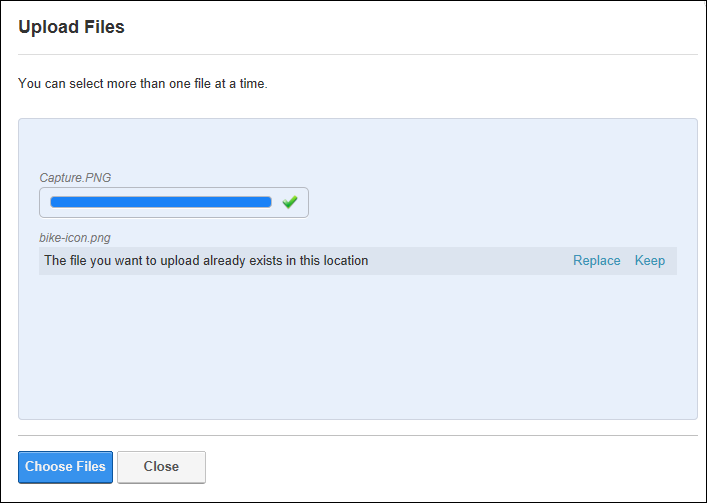
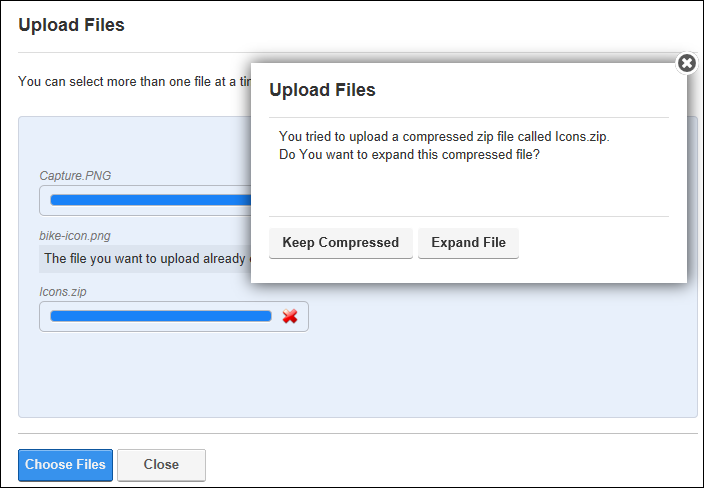

Uploading Files
How to upload one or more individual files or a zipped (compressed) file to the Digital Asset Management Pro module. These files can then be selected and viewed using various modules such as Links, Media, HTML / HTML Pro, etc. Authenticated users must be granted Write to Folder permission to the folder where the file is being uploaded to and Edit Module permissions to upload compressed zip files. Authenticated users must be granted Add permission to the folder where the file or compressed zip file is being uploaded to.
- Navigate to Admin >
 File Management - OR - Go to a Digital Asset Management Pro module.
File Management - OR - Go to a Digital Asset Management Pro module.
- Navigate to and select a folder that you are authorized to upload files to. See "Navigating to and Selecting Folders". In this example, the selected folder has Content Approval enabled.
- Click the Upload Files
 button located on the toolbar. This opens the Upload Files page.
button located on the toolbar. This opens the Upload Files page.

- Click the Choose Files button and select a file from your computer.
- If a file with the same name already exists, the message "The file you want to upload already exists in this location" is displayed.
- Select Replace to upload the new version of this file. If workflow is enabled on the selected folder, this will begin the workflow process for the file. This option will be selected for this example.
- Select Keep to cancel the upload of this file and keep the original file.

- If the chosen file is a compressed zip file a message reading "You tried to upload a compressed zip file called [filename]." is displayed and the following options are available:
- Keep Compressed: Select to upload the single compressed zip file to the folder. This option will be selected for this example.
- Expand File: Select to expand the file and upload all of the files within the compressed zip file as separate files to the folder.

- Repeat Step 4 to upload additional files.
- Click the Close button once you have chosen all the files to be uploaded. The uploaded files are now added to the Files Window of the selected folder. For this example, notice that the bike-icon.png file now displays the Locked icon which indicates it is in the workflow process. Also notice that the Icons.zip file is still compressed.